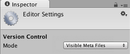
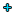
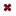

Version control integration
Unity supports version control integration with PerforceA version control system for file change management. More info
See in Glossary and Plastic SCM. Refer to those pages for specific information regarding your choice of version control.
Using a version control system makes it easier for a user (or multiple users) to manage their code. It is a repository of files with monitored access. In the case of Unity, this is all the files associated with a Unity project. With version control, it is possible to follow every change to the source, along with information on who made the change, why they made it, and what they changed. This makes it easy to revert back to an earlier version of the code, or to compare differences in versions. It also becomes easier to find out when a bug first occurred, and with what changes might have caused it.
Setting up your version control in Unity
Get your version control software setup according to its instructions, then follow these steps:
Set up or sync a workspace on your computer using your chosen client (refer to the Plastic SCM Integration guide or the Perforce Integration guide for help with this step).
Copy an existing project into the workspace, or start Unity and create a new project in the workspace.
Open the project and go to Edit > Project SettingsA broad collection of settings which allow you to configure how Physics, Audio, Networking, Graphics, Input and many other areas of your project behave. More info
See in Glossary > Editor.Under Version ControlA system for managing file changes. You can use Unity in conjunction with most common version control tools, including Perforce, Git, Mercurial and PlasticSCM. More info
See in Glossary, choose your Mode according to the version control system that you chose.
Fill out your version control settings, such as username / password / server / workspace.
Keep Automatic add checked if you want your files to be automatically added to version control when they’re added to the project (or the folder on disk). Otherwise, you need to add new files manually.
You have the option to work offline. This mode is only recommended if you know how to manually integrate changes back into your version control software (Working offline with Perforce).
You can edit the Asset Serialization, Default Behaviour Mode and Sprite PackerA facility that packs graphics from several sprite textures tightly together within a single texture known as an atlas. Unity provides a Sprite Packer utility to automate the process of generating atlases from the individual sprite textures. More info
See in Glossary options to suit your team’s preferences and choice of version control.Click Connect and verify that “Connected” is displayed above the Connect button after a short while.
Use your standard client (e.g. p4v) to make sure that all files in the Assets and ProjectSettings folders (including files ending with .meta) are added.
N.B. At any point you can go to the Prefences menu and select External Tools and adjust your Revision Control Diff/Merge tool.
Using version control
At this point you should be able to do most of the important version control operations directly by right-clicking on the assetsAny media or data that can be used in your game or project. An asset may come from a file created outside of Unity, such as a 3D model, an audio file or an image. You can also create some asset types in Unity, such as an Animator Controller, an Audio Mixer or a Render Texture. More info
See in Glossary in the project viewA view that shows the contents of your Assets folder (Project tab) More info
See in Glossary, instead of going through the version control client. The version control operations vary depending on which version control you choose, this table shows what actions are directly available for each version control:
| Version Control Operation | Description | Perforce | Plastic SCM |
| Check Out | Allows changes to be made to the file | Yes | Yes |
| Diff against head | Compares differences between file locally and in the head | Yes | Yes |
| Get Latest | Pull the latest changes and update file | Yes | No* |
| Lock | Prevents other users from making changes to file | Yes | No** |
| Mark Add | Add locally but not into version control | Yes | Yes |
| Resolve Conflicts | To resolve conflicts on a file that has been changed by multiple users | Yes | No*** |
| Revert | Discards changes made to open changed files | Yes | Yes |
| Revert Unchanged | Discards changes made to open unchanged files | Yes | Yes |
| Submit | Submits current state of file to version control | Yes | Yes |
| Unlock | Releases lock and allows changes to be made by anyone | Yes | No** |
* To get the latest changes and update the file using Plastic SCM, you need to use the version control window.
** Locking and Unlocking using Plastic SCM require you to edit a specific Plastic SCM lock file externally, see the Plastic SCM Integration page for more information.
*** Conflicts are shown within the version control menu but resolved in the Plastic SCM GUI.

Version Control Window
You can overview the files in your changelist from the Version Control Window (Window > Asset Management > Version Control). It is shown here docked next to Inspector in the editor:
The ‘Outgoing’ tab lists all of the local changes that are pending a commit into version control whereas the ‘Incoming’ tab lists all of the changes that need to be pulled from version control.
By right clicking assets or changelists in this window you perform operations on them. To move assets between changelists just drag the assets from one changelist to the header of the target changelist.
Icons
The following icons are displayed in Unity editor to visualize version control status for files/assets:
| Icon | Meaning | Additional information |
| File added locally | Pending add into version control | |
|  | File added to version control by another user | Pending add into version control |
| File is checked out by you | Checked out locally | |
| File is checked out by another user | Checked out remotely | |
| There has been a conflict merging this file | Needs to be resolved | |
|  | File has been deleted by you | Pending deletion in version control |
| File has been deleted by another user | Pending deletion in version control | |
| File is not yet under version control | n/a | |
| File is locked by you | Cannot be modified by other users | |
 |
File is locked by another user | Cannot be modified by you |
| Another user has checked in a new version of this file | Use “Apply Incoming Changes” to get latest version | |
| The server is requesting the version control status of this file, or is waiting for a response | You can only see this when using a centralised version control system like Perforce |
Things to note:
- Certain version controls will not allow you to edit assets until they’re marked as Checked out (unless you have Work offline checked).
- When saving changes to a .sceneA Scene contains the environments and menus of your game. Think of each unique Scene file as a unique level. In each Scene, you place your environments, obstacles, and decorations, essentially designing and building your game in pieces. More info
See in Glossary file it will automatically be checked out. - Project Settings inspectorsA Unity window that displays information about the currently selected GameObject, Asset or Project Settings, alowing you to inspect and edit the values. More info
See in Glossary have a checkout button in the bottom right that allow you to checkout settings. - A yellow warning will often appear to remind you to check out items in order to make changes to them, this mostly applies to Project Settings inspectors.
- In Plastic SCM automatically generated assets such as light maps are automatically added/checked out.
Automatic revert of unchanged files on submit
When working with assets, Unity automatically checks out both the asset file as well as the associated .meta file. In most situations however, the .meta file is not modified, which might cause some extra work e.g. when merging branches at a later point.
Offline mode
Unity supports working in offline mode, e.g. to continue working without a network connection to your version control repository.
- Select Work offline from Version Control Settings if you want to be able to work disconnected from version control.
Allow Async Update
Unity supports asynchronous version control status queries for some version control providers, such as Perforce. This option allows those providers to update the version control status of files without stalling Unity. Use this option when the connection to your version control server has high latency.
- If you experience stalls during status queries, go to Version Control Settings and select Allow Async Update.
Note: Only status queries are asynchronous. Operations that change the state of files, or require up-to-date knowledge of file status, are performed synchronously.
Troubleshooting
If Unity cannot commit your changes to your version control client, (for example, if the server is down or license issues occur), your changes are stored in a separate changeset.
Working with the Asset Server
To learn more about working with the Asset Server (Unity’s internal version control system), see documentation on the Asset ServerLegacy - An asset and version control system with a graphical user interface integrated into Unity. Enables team members to work together on a project on different computers. More info
See in Glossary.
Working with other version control systems
To work with a version control system unsupported by Unity, select MetaData as the Mode for Version Control in the Editor Settings. This allows you to manage the source Assets and metadata for those Assets with a version control system of your choice. For more on this, see documentation on External Version Control Systems.
2017–02–12 Page amended with limited editorial review
Documentation on asynchronous version control status queries added in Unity 2017.3.
Did you find this page useful? Please give it a rating: